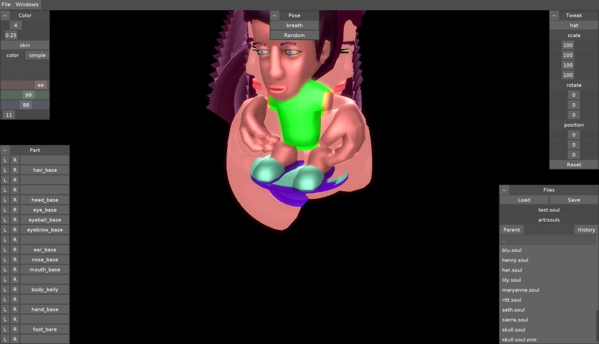
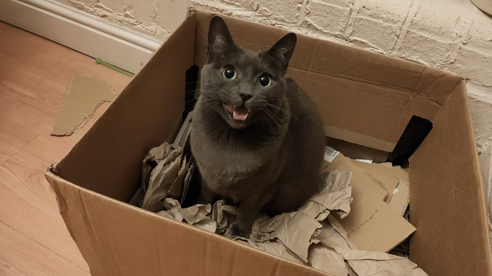
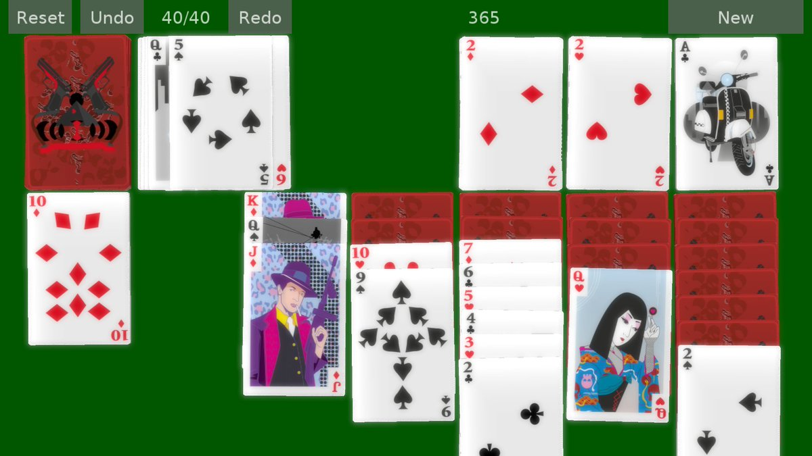
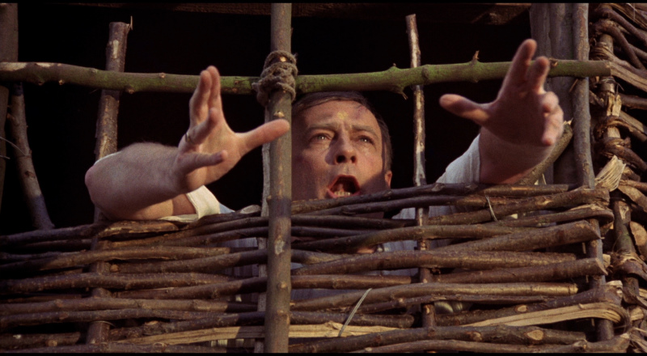
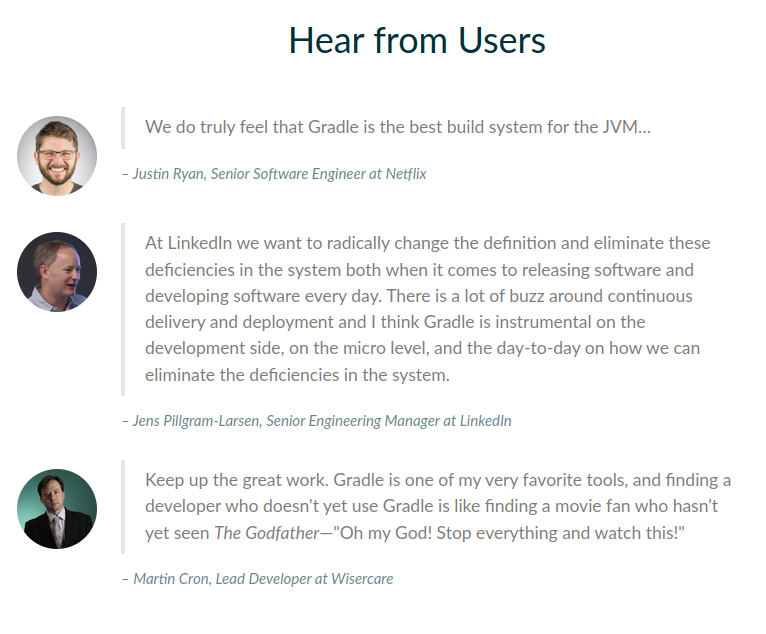

It has been zero days since I googled how to exit vi.
Forgetting to draw the background is perfectly normal and highly preferable to forgetting to draw the foreground. #screenshotsaturday 
https://twitter.com/dougbinks/status/1469651805403586562 @dougbinks Technically I did not follow this exact recipe and instead accomplished most of the steps with a furry helper sitting in the box.
He was not too keen on the mixing part but still did not leave the box despite constant protests.
A simple recipe to use up left over boxes:
Take the biggest box and tape the lid flaps down.
Tear up the other boxes and throw them into the first box.
Drizzle a handful of cat treats on top and mix liberally.
Place box under windowsill and wait for predator to arrive. 
Shouldn't this be pyramid shaped and are we sure we looked everywhere inside the other pyramids? https://twitter.com/ReutersScience/status/1468283748575760390
https://twitter.com/GeekAnnoyed/status/1466505189121302532 @GeekAnnoyed I think we will probably catch it while it's back in cinemas if you want to join us?
Also next week is diehard and gremlins :)
https://twitter.com/YohannaLoucheur/status/1466523432217198595 @YohannaLoucheur @rolfkleef This one?
http://d-portal.org/ctrack.html#view=act&aid=CA-3-P007047001
Looks like it was not in the file downloaded yesterday (around midnight GMT) but it was in there today.
Not seeing any related errors in the logs, so I think we got the file fine yesterday and it was just not in there yet.
Noodling a rather literal logo for Sword-Stone Technologies.
@ekoner Rhubarb, rhubarb rhubarb rhubarb rhubarb rhubarb.
Rhubarb rhubarb, rhubarb rhubarb, rhubarb rhubarb.
Rhubarb.
Custard.
Today we commemorate @StooCambridge being insufficiently respectful and wish them a full day of being insufficient at everything. https://twitter.com/TGNProfessor/status/1458569293373886467
To the untrained eye this just looks like klondike but what it represents is my latest attempt to cleanup my 2d/3d view/light/shadow setup so that both modes can share a clean perspective transform and drawspace. #screenshotsaturday 
https://twitter.com/Robwilliams71/status/1456761651512938503 @Robwilliams71 You're out of date mate, he got replaced by Neil Dudgeon years back.
I guess lua is now a hydra with three main heads and lua 5.1 is very much the base language. https://twitter.com/zeuxcg/status/1455943610935828482
https://twitter.com/derElbi/status/1456627281837842433 @derElbi How you proceed is entirely your choice.
The important thing, is to be aware of your actions and to have intent. :)
Remember to check for trapped and distressed edwoodwoodwoodwood before setting any woodwoodwoodwoodwood on fire. 
How to Recognise Different Types of Trees From Quite a Long Way Away https://twitter.com/gutenberg_new/status/1456521830357864453
https://twitter.com/Graham_T_S/status/1451130128877117440 @Graham_T_S I've been avoiding it for about 5 years. Not really that long, but long enough for everything to break :)
Draged back to android after recently discovering that tablet+pen is now a cheapish option. Picked up a Samsung S6 lite and using a pen is so much more civilized.
Revisiting Android land and discovering I need to use Gradle now causing this reaction...
"Oh for fuck's sake another fucking build system what the flying fuck was wrong with the last fucking one?"
Which isn't quite the same as the user stories on https://gradle.org/ 
I wonder how coopy this is? https://twitter.com/WhatsOnSteam/status/1450493541252227072